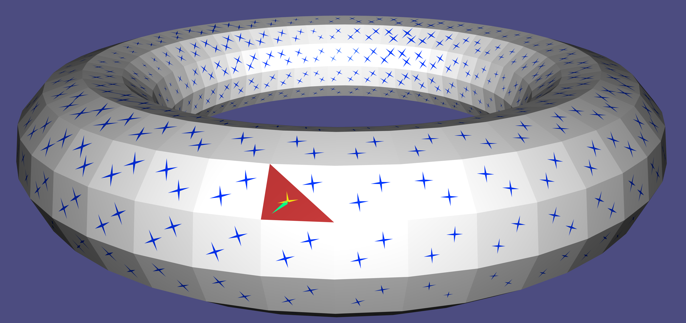

Directional tutorial notes¶
Introduction¶
Directional is a C++ geometry processing library focused on directional-field processing. The functionality is based on the definitions and taxonomy surveyed theoretically in 18 and 9, and in many newer papers in the literature, cited within context in this tutorial and in the code. Directional contains tools to edit, analyze, and visualize directional fields of various degrees, orders, and symmetries.
Directional has gone through a major paradigm shift in version 3.0: the discretization is abstracted from face-based fields into general discrete tangent bundles that can represent a rich class of directional-field representations. As a result, many of the algorithm of the library can now work seamlessly on several representations without change (as an example, power fields can be computed on either vertex-based or face-based fields with the same function). The library comprises two basic elements:
-
Classes representing the basic tangent bundle and field structures. They are built with inheritance so that functions can be written polymorphically and consequently algorithms can be applied to several representations that have the minimal set of required properties.
-
Standalone functions, implementing directional-field algorithms, that take these classes as parameters.
Our paradigm avoids buffed classes with a complicated nested hierarchy; instead, the member functions in the classes are minimal,
and only used to implement the essential properties of a geometric object (for instance, the connection between tangent spaces).
The structure of these standalone functions follows the general philosophy of libigl: the library is header only, where each header contains a set of functions closely related (for instance, the precomputation and computation of some directional quantity over a mesh). For the most part, one header contains only one function. The atomic data structures are, for the most part, simple matrices in Eigen,
The visualization is done through a specialized class DirectionalViewer, on the basis of libigl viewer, with many extended options that allow the rendering of directional fields.
The header files contain documentation of the parameters to each function and their required composition; in this tutorial we will mostly tie the functionality of Directional to the theoretical concepts of directional fields and the methods to process and visualize them.
Installing the tutorial examples¶
This tutorial comprises an exhaustive set of examples that demonstrates the capabilities of Directional, where every subchapter entails a single concept. The tutorial code can be installed by going into the tutorial folder from the main Directional folder, and typing the following instructions in a terminal:
mkdir build
cd build
cmake -DCMAKE_BUILD_TYPE=Release ../
make
This will build all tutorial chapters in the build folder. The necessary dependencies will be appended and built automatically. To build in windows, use the cmake-gui .. options instead of the last two commands, and create the project using Visual Studio, with the proper tutorial subchapter as the “startup project”.
To access a single example, say 202_Sampling, go to the build subfolder, and the executable will be there. Command-line arguments are never required; the data is read from the shared folder directly for each example.
Most examples require a modest amount of user interaction; the instructions of what to do are given in the command-line output upon execution.
Discrete tangent bundles¶
In the continuum, directional fields are represented as elements of tangent spaces, where a tangent space is a linear space attached to each point of a manifold. The set of all such tangent spaces is called a tangent bundle.
In the discrete setting, a tangent bundle is a finite set of
The central data structure of Directional is the discrete tangent bundle, which is a finite and discrete graph G_{TB} = (V_{TB},E_{TB}) of tangent spaces, which are independent vector spaces of dimension d. This concept is implemented in class TangentBundle. Discrete tangent bundles can supply one of more of the following properties:
-
Intrinsic parameterization: vectors in a single tangent space are represented with coordinates \left(x_1,\cdots,x_d\right) in an arbitrary, but fixed basis of dimension d. The basis itself does not need to be specified for many algorithms, it can stay abstract.
-
Adjacency: a tangent bundle is represented as a graph where the tangent spaces are nodes, and the graph edges are adjacency relations, that encode the local environment of any tangent space. This in fact encodes the combinatorial and topological structure of the underlying discrete manifold, akin to the smooth structure in the continuum.
-
Connection: a connection defines the notion of parallelity in two adjacent tangent spaces, which encodes a metric structure on the underlying manifold, and allows to compute derivatives and curvature. Specifically, a connection is a directed-edge-based quantity on the tangent-bundle graph, given as a change of coordinates between the bases of the source tangent space to the target tangent space. This can be represented as an orthogonal matrix.
-
metric the metric on the bundle is supplied in two quantities:
connectionMassis the weight of each edge E_{TB}, andtangentSpaceMasspacks the weights of an inner product on vectors on the bundle. That is, it has either V_{TB} or V_{TB}+E_{TB} that are the non-zero components of the vector mass matrix. -
Cycles: G_{TB} can be equipped with a notion of cycles F_{TB} that are simply-connected closed chains of spaces. Given a connection, the holonomy of a cycle is the failure of a vector to return to itself following a set of parallel transports around the cycle. Concretely, it is encoded in the logarithm the product of connection matrices. In d=2, holonomy, which is then a single angle, is equivalent to the curvature of the cycle modulo 2\pi. There are two types of cycles, which define the topology of the underlying manifold: local cycles (aking to “faces” in G_{TB}), which are small closed loops, and global cycles, which can be homological generators and boundary loops. The singularities of fields are defined on the local cycles.
-
Cochain complex: vector fields are often objects of differential geometry where the underlying manifold is equipped with notions of gradient, curl, divergence, and other vector calculus identities. A cochain complex is defined by a gradient operator G and a curl operator C where C \cdot G=0. The “cochain” aspect can be purely algebraic and not rely on any explicit nodes in G_{TB}; we call G\cdot f for any “scalar” function f exact (or conservative) fields and fields where C\cdot v=0 closed (or curl-free) fields. A cochain complex is enough to define deRham cohomology with the correct dimensions ker(C)/im(G). However to extract the explicit harmonic fields we need the next property. The combination of a metric and a cochain complex allows for a well-defined notion of Helmholtz-Hodge decomposition: any vector field v can be decomposed into exact part Gf, coexact part M^{-1}C^Tg and harmonic part h as follows [~boksebeld_2022]:
The inner product also introduces the discrete divergence operator G^T\cdot M. Note that the coexact part is divergence free since G^T\cdot C^T = 0. The harmonic part h is both.
Oftentimes the above intrinsic quantities are enough for all algorithms; nevertheless, even for reasons of input, output, and visualization, a TangentBundle will contain the following, embedding-based extrinsic quantities:
-
Sources and normals: point locations and their normals (the codimensional directions of the manifold), which define the tangent planes of the manifold in the Euclidean space. Note that this doesn’t mean it’s a watertight mesh; that could also encode a pointcloud, for instance.
-
extrinsic to intrinsic and back: functionality that projects extrinsic vectors into intrinsic space (might lose information), or produces the extrinsic representation of an intrinsic directional.
-
Cycles sources and normals. Like (7), but for the cycles themselves, This would be where singularities are
locatedin space, and might just be a visualization quantity.
Two main types are currently implemented in directional: IntrinsicFaceTangentBundle implements face-based tangent spaces, where the fields are tangent to the natural plane supporting triangles of surface meshes, and IntrinsicVertexTangentBundle implements vertex-based intrinsic tangent spaces, which parameterize the cone environment of the 1-ring directly CITE.
For example, this is how IntrinsicFaceTangentBundle implements the above quantities:
- Intrinsic parameterization: a local basis in every face.
- Adjacency: dual (inner) edges between any two faces.
- Connection: the rotation matrix between the bases of any two adjacent faces.
- Cycles: the local cycles are around vertex 1-rings, where singularities are then defined as (dual) vertex values, and global cycles are dual loops of generators and boundaries.
- Cochain complex: the classical FEM face-based gradient and curl.
- Inner product: the natural face-based mass matrix (just a diagonal matrix of face areas).
- Sources are face barycenters, and normals are just face normals.
- The projection to the supporting plane of the face and encoding in local coordinates.
- Vertices and vertex normals (area-weighted from adjacent faces).
Some of the choices above can of course be variated to different flavors of face-based fields (for instance, the metric culminating in the mass weights). IntrinsicFaceTangentBundle wraps around a an orientable input triangle mesh in a single connected-component. There are no general limitations on the genus or the boundaries. If your input comprises several connected components altogether, you should use several tangent bundles.
Representation¶
The representation of a directional field is its encoding in each discrete tangent plane. The most important element is the number of vectors in each tangent plane, which we denote as the degree of the field N. Currently, Directional supports fields that are represented by explicit (intrinsic) coordinates, which we call a cartesian field, and is represented by the class CartesianField. Directional currently supports the following variants of Cartesian fields18:
- Raw - a vector of d\times N entries represents an intrinsic 1^N-vector (a directional with N independent vectors in each tangent plane) a dimension-dominant ordering: (X_{1,1},\ldots, X_{1,d}),(X_{1,2},\ldots,X_{2,d}),\ldots (X_{N,1},\ldots, X_{N,d}) per face. Vectors are assumed to be ordered in counterclockwise order in most Directional functions that process raw fields. the memory complexity is then dN|V_{TB}| for the entire directional field. A Cartesian Field indicates being a raw-field by setting
CartesianField::fieldTypetodirectional::RAW_FIELD. - Power Field - This is a unique type to d=2. It encodes an N-rotational-symmetric (N-RoSy) object as a single complex number y=u^N relative to the local basis in the tangent space, where the N-RoSy is the set of roots u \cdot e^{\frac{2\pi i k}{N}}, k \in [0,N-1]. The magnitude is also encoded this way, though it may be neglected in some applications. The memory complexity is then 2|V_{TB}|.
- PolyVector - Also unique to d=2, this is a generalization of power fields that represents an N-directional object in a tangent space as the coefficients a of a monic complex polynomial f(z)=z^N+\sum_{i=0}^{N-1}{a_iz^i}, which roots u are the encoded 1^N-vector field. In case where the field is an N-RoSy, all coefficients but a_0 are zero. Note: A PolyVector that represents a perfect N-RoSy would have all a_i=0,\ \forall i>0, but a_0 would have opposite sign from the power-field representation of the same N-RoSy. This is since the power field represents u^N directly, whereas a PolyVector represents the coefficients of z^N-U^N in this case. The memory complexity is 2N|V_{TB}|.
Directional provides a number of conversion functions to switch between different representations. Each of the functions is of the form rep1_to_rep2, where rep1 and rep2 are the representation names in the above list. e.g., polyvector_to_raw(). Some possible combinations are given by composing two functions in sequence. However, note that not every conversion is possible; for instance, it is not possible to convert from PolyVectors to power fields, as they do not possess the same power of expression. Converting into the more explicit raw representation is often needed for I/O and visualization.
Chapter 1: I/O and Visualization¶
Visualization paradigm¶
Directional uses a specialized class called DirectionalViewer which inherits and extends the libigl Viewer class, augmenting it with functionality that pertains to directional fields. A mesh is then stored with its accompanying geometric quantities: the field, edge, vertex, and face-based scalar data, isolines, and more, that we detail in the tutorial per chapter in context. Like libigl viewer, Directional supports independent multiple meshes, each with its own set of quantities. Internally, the visualization schemes carete sub-meshes which serve as layers on the original meshes: arrows for glyphs, bars for edge highlights, etc. In practice this is encapsulated from the user and does not need to be controlled directly.
101 Glyph Rendering¶
The most basic operation on directional fields is reading them from a file and drawing them in the most explicit way. In this example, a mesh and a field are read from a file and visualized as follows:
directional::readOFF(TUTORIAL_SHARED_PATH "/bumpy.off",mesh);
directional::read_raw_field(TUTORIAL_SHARED_PATH "/bumpy.rawfield", mesh, N, field);
directional::read_singularities(TUTORIAL_SHARED_PATH "/bumpy.sings", field);
directional::DirectionalViewer viewer;
viewer.set_mesh(mesh);
viewer.set_field(field);
The field is read in raw format (see File Formats), which is detailed in the Introduction. The field is face-based, and the singularities are consequently vertex-based,
The singularities and glyphs (and most other properties) can be toggled by functions of the type DirectionalViewer::toggle_field() and DirectionalViewer::toggle_singularities().

Glyph Rendering on a mesh with singularities.
102 Discrete Tangent Bundles¶
This example shows a Cartesian field computed (with the power field method described in Example 301 on either a vertex-based tangent bundle, or a face-based tangent bundle, to highlight the flexibility of choosing a discretization. The relevant code segments are:
directional::readOBJ(TUTORIAL_SHARED_PATH "/elephant.obj", mesh);
powerFaceField.init(mesh, POWER_FIELD, N);
powerVertexField.init(mesh, POWER_FIELD, N);
...
directional::power_field(mesh, constFaces, constVectors, Eigen::VectorXd::Constant(constFaces.size(),-1.0), N, powerFaceField);
directional::power_field(mesh, constVertices, constVectors, Eigen::VectorXd::Constant(constVertices.size(),-1.0), N, powerVertexField);
//computing power fields
directional::power_to_raw(powerFaceField, N, rawFaceField,true);
directional::power_to_raw(powerVertexField, N, rawVertexField,true);
One can see the stages of computing a field: first reading a mesh (readOBJ()), then initializing the approxiate tangent bundle with the mesh (powerFace/VertexField.init()), and then computing this power field on top of this representation (power_field()). The field is converted to raw representation in power_to_raw()) for later visualization.

Power fields on a face-based tangent bundle (left) and vertex-based (right)
103 Picking and editing¶
This example demonstrates the editing paradigm in Directional, based on libigl picking. A face and a vector within the face are chosen, and clicking on a new direction for the vector changes it. Note the different colors for glyphs and selected faces. The specificiation of selection is done via the following code:
directionalViewer->set_selected_faces(selectedFaces);
directionalViewer->set_selected_vector(currF, currVec);

Editing several vectors on a single face.
104 Streamline Tracing¶
Vector fields on surfaces are commonly visualized by tracing [streamlines] (https://en.wikipedia.org/wiki/Streamlines,_streaklines,_and_pathlines). Directional supports the seeding and tracing of streamlines, for all types of directionals. The seeds for the streamlines are initialized using DirectionalViewer::init_streamlines(), and the lines are traced using DirectionalViewer::streamlines_next(). Each call to DirectionalViewer::advance_streamlines() extends each line by one triangle, allowing interactive rendering of the traced lines. The streamline have the same colors as the initial glyphs, where the colors fade into white as the streamline advance.

Interactive streamlines tracing.
105 Scalar quantities on meshes¶
It is possible to set and visualize scalar quantities on meshes at different discretization locations: either face based quantities that appear as flat colors per face, vertex-based (pointwise) quantities that interpolate linearly on faces, appearing smooth, and edge-based (integrated) quantities, that appear as flat quantities on a diamond mesh associates with each edge (taking a \frac{1}{3} of the area of each adjacent triangle). The is controlled by the DirectionalViewer::set_X_data() functions, that also allow the setting of the viewable range of the function (the rest is clipped).

Face-, Vertex- and edge-based data on a mesh, with a field as a layer of (white) glyphs.
106 Sparse Glyph View¶
On big meshes, it might appear cumbersome to view all glyphs on every face. It is possible to only view the glyphs on a subsample of faces, by using the sparsity parameter in DirectionalViewer::set_field().

Dense and Sparse views of a field as glyphs.
Chapter 2: Discretization and Representation¶
In the following sections, we show some effects of working with different representations and converting between them.
201 Principal Matching¶
One of the fundamental operations in directional-field processing is matching. That is, defining which vectors in tangent space t_i correspond to those in adjacent tangent space t_j. In Directional, we only work with order-preserving matchings: if vector k in tangent space t_i is matched to vector m in t_j, then for any l \in \mathbb{Z}, vector k+l is matched to vector m+l (modulu N). Suppose that the orientation of the TB graph edge is t_i \rightarrow t_j. Then, the matching is encoded as m-k. The matching is sometimes not known in advance (for instance, when the Cartesian field is input or computed), and it needs to be devised from the field.
Given a raw field (in assumed CCW order in every tangent space), it is possible to devise the rotation angles \delta_{ij} by the process of principal matching 7. Principal matching is defined as the matching with minimal effort, always putting it within the range of [-\pi, \pi) (and therefore denoted as “principal”). It corresponds to the “smallest angle” matching for N-RoSy fields.
principal matching is done through the function principal_matching() , that accepts a Cartesian field as a parameter, and computes the following:
- The matching on each (directed) TB-graph edge. This is stored in the
matchingmember of the field class. - The indices of the cycles. The singular local cycles are are stored in the corresponding
singLocalCyclesandsingIndicesof the field class.
The singularities are computed as the index of each local cycle from the effort around it. The index of a cycle is the amount of rotations a directional object undergoes around a cycle. A directional must return to itself after a cycle, and therefore the index is an integer I when a vector m in the face ended up in vector m+I. Note that this can also include multiple full rotations (i.e., this is not taken modulu N), where the index can be unbounded. The fractional part of the index is encoded by the matching; however, matching alone cannot encode integral indices (for instance, a single vector field has trivial (Zero) matching anywhere, but can have singularities). Note that for face-based field singular cycles are vertices, whereas in vertex-based fields, singular cycles are faces. Further note that Directional computes singularities only around the local cycles. That is, principal_matching() does not update singularities around boundary or generator loops.

A Field is shown with singularities, and a single face is shown with the principal matching to its neighbors (in multiple colors).
202 Sampling¶
This is an educational example that demonstrates the loss of information when generating a Cartesian field from rotation angles, and then trying to retrieve them back by principal matching. This causes low valence cycles and undersampling cause aliasing in the perceived field. There are three modes seen in the example:
-
In the polar mode, the user can prescribe the index of a singularity directly, and compute the field with index prescription (see example 401). With this, the rotation angles between adjacent faces can be arbitrarily large, and appear as noise in the low valence cycles.
-
In the principal-matching mode, the rotations are reconstructed from the field, without prior knowledge of the polar-prescribed rotations from the previous mode. The large rotation between adjacent faces is lost, which gives rise to a “singularity party”: many perceived singularities or a lower index.
-
In the interpolation mode, the field is interpolated on the free faces (white) from the constrained faces (red), keeping the red band fixed from the polar mode. We see a field that is smooth in the Cartesian sense, with more uniformly-placed singularities.

Alternating: the polar mode, the principal-matching mode, and the Cartesian mode.
203 Combing¶
Given a matching (in this case, principal matching), it is possible to “comb” the field. That is, re-index each face (keeping the CCW order), so that the vector indexing aligns perfectly with the matching to the neighbors—then, the new matching on the dual edges becomes trivially zero. This operation is important in order to prepare a directional field for integration, for instance. In the presence of singularities, the field can only be combed up to a forest of paths that connect between singularities, also known as seams. Note that such paths do not necessarily cut the mesh into a simply-connected patch, but may only connects subgroups of singularities with indices adding up to an integer; as a trivial example, a 1-vector field is always trivially combed, even in the presence of integral singularities, and the set of seams is zero. The combing is done through the function directional::combing(). The matching in the output combedField is already set to the trivial matching in the combed regions, and the correct matching across the seam.

Colored indices of directionals, alternating between combed (with seams) and uncombed) indexing.
Chapter 3: Cartesian Methods¶
Cartesian Fields¶
The Cartesian representation is a meta-category for representation of vectors in explicit coordinates, either \left(x,y\right) in some local 2D basis on a tangent plane, or \left(x,y,z\right) in the ambient coordinates of the 3D space. The raw, representative (of an N-RoSy), power field, and PolyVector representations are all such examples. Cartesian fields often do not automatically contain information about the matching, or rotation, of a field between one face and the next, and it needs to be computed using principal matching. This chapter focuses on computing fields with this representation.
301 Power Fields¶
This representation is offered in 11, but they did not give it a specific name (the method in general is called “globally optimal”). We use the name “power fields” coined in 1.
A power field representation uses a complex basis in each tangent plane of a discrete tangent bundle, and represents an N-RoSy using a power vector—a single complex number y per face so that its root set y=u^N comprises the vectors of the N-RoSy.
By prescribing constraints y_B on a set of faces B, the algorithm interpolates the field to the rest of the faces y_I by minimizing the face-based quadratic Dirichlet energy:
where e_f is the representation of the vector of edge e in the basis of f, and e_g is for g respectively. The weights \omega_e are the harmonic weights as given by 5. The field is computed through the function directional::power_field(). It is possible to softly prescribe the constraints \left\{Y^*_C\right\} with alignment weights \omega_c, solving the following minimization problem:
where \lambda_S,\lambda_C, \omega_c, \forall c\in C are user-controlled.
If the set B is empty, the field is only well-defined up to a global rotation; therefore, the algorithm arbitrarily sets a single vector in one tangent space and interpolates it to the rest of the mesh.

Hard (left) and soft (right) aligned constraints (yellow on red faces) interpolated to the rest of the mesh. Note the singularities that are discovered through principal matching.
302 PolyVectors¶
A Polyvector field 7 is a generalization of power fields that allows to represent independent vectors in each tangent space, invariant to their order. The representation is as the coefficient set a_{0 \cdots N-1} of a monic complex polynomial in the local compex basis:
where the roots P(z)=0 are the vectors of the face-based directional object, represented as complex numbers in the local basis. The Dirichlet energy is as for power fields, except with a term for each a_i, with the appropriate power i. Note that an N-RoSy is represented as a polynomial where all a are zero except a_0. Principal matching, combing, and effort are well-defined on PolyVectors as well.
With the function polyvector_field() one can solve the linear Polyvector problem in its full capacity; the input is a set of prescribed constraints v_b per tangent space set B \subset V_{TB}, where you can prescribe any amount of vectors smaller of equal than N (unless there is symmetry) per tangent space (that means we allow set B to have repeating tangent spaces). Further consider the soft-alignment vectors v_c for face set c \subset C, accompanied by an alignment weight \omega_c (again with repeating faces). We then solve the following quadratic optimization problem:
So that the set B is perfectly interpolated. The matrices Q_{c} and vectors q_{c} are designed to create a linear subspace of polynomials for which the respective vectors v_c are roots; for details see Appendix A in 14. The last term then measures the soft alignment, also weighted by \omega_c per vector. The same technique is used as a hard reduction for the set B. The middle term subdues all non-free powers of P(z), thus optimizing P(z) to be as much a power vector as possible. The different energies are also controlled globally by user parameters \lambda_S, \lambda_R and \lambda_C. It is also possible to constrain the field to be a perfect power field; in fact power_field() is implemented by calling polyvector_field(). This tutorial examples allows interacting with the alignment weights.

Top: Sharp-edge constraints (left; note sometimes more than one per face), Hard (middle) and soft (right) solution. Bottom: dominant-weighted smoothness (left), alignment (middle) and rotational symmetry (right).
303 PolyCurl Reduction¶
This functionality only works with face-based fields via IntrinsicFaceTangentBundle.
Vector-field guided surface parameterization is based on the idea of designing the candidate gradients of the parameterization functions (which are tangent vector fields on the surface) instead of the functions themselves. Thus, vector-set fields (N-Rosy, frame fields, and polyvector fields) that are to be used for parameterization (and subsequent remeshing) should be as integrable as possible: it should be possible to locally comb them into individual vector fields that are approximately gradients of scalar functions. Fields obtained by “as-smooth-as-possible” design methods (eg. 12, 11, 7, 2, 17) do not have this property in general. In 8, a method for creating integrable polyvector fields was introduced by the process of curl reduction. This method takes as input a given field and improves its integrability by iteratively reducing the PolyCurl of the field; that is, the coefficients of a dual-edge-based polynomial, whose roots are the curl of the matched vectors in the two adjacent faces. By working with PolyCurl instead of matching, the optimization can be done on the PolyVector itself, allowing for singularities to naturally emerge. However, the optimization is nonlinear—it reduces the PolyCurl iteratively, while preserving the CCW order of the vectors (for a bijective parameterization), and opting for as smooth and orthogonal as possible result.
A field that has zero PolyCurl everywhere is locally (away from singularities) integrable into N different scalar functions; globally, it is integrable into a rotationally-seamless multi-branched function, which we further demonstrate in Chapter 5. We demonstrate the PolyCurl-reduction optimization. Note that this tutorial demonstrates an alternative matching curl_matching()with that minimizes curl instead of rotation.

PolyCurl is iteratively reduced from an initial PolyVector field, Top: fields for iteration 0 (original), 10, and 50. Bottom: PolyCurl plots. The color is the norm of the vector of the roots of the PolyCurl. Its maximal value (infinity norm) appears below.
304 Conjugate Fields¶
This functionality only works with face-based fields via IntrinsicFaceTangentBundle.
Two tangent vectors u and v are conjugate if
$$k_1 (u^T d_1)(v^T d_1) + k_2(u^T d_2)(v^T d_2) = 0, $$ where k_1 and k_2 are the principal curvatures and d_1 and d_2 are the respective principal directions.
Conjugate vector fields are very important in architectural geometry: their integral lines form, informally speaking, an infinitesimal planar quad mesh. As such, the finite quad mesh that results from discretizing conjugate networks is a good candidate for consequent planarity parameterization 13.
Finding a conjugate vector field that satisfies given directional constraints is a standard problem in architectural geometry, which can be tackled by deforming a 2^2 PolyVector field to the closest conjugate field. Such an algorithm was presented in 7, which alternates between a global smoothness and orthogonality step, and a local step that projects the field on every face to the closest conjugate field.

A smooth 2^2-PolyVector field (left) is deformed to become a conjugate field (right). Top: fields Bottom: conjugacy plots.
Chapter 4: Polar Methods¶
Polar Fields¶
Polar fields are represented using angles. These angles may encode the rotation from some given basis on a tangent space (and so it is a “logarithmic” representation, when compared to Cartesian methods), or an angle difference between two neighboring tangent spaces (in the sense of deviation from parallel transport). The former usually requires integer variables for directional-field design. The latter does not, but state-of-the-art methods require the prescription of indices around independent dual cycles in the mesh. Currently, Directional supports the latter.
401 Index Prescription¶
The notion of encoding rotation angles on dual edges, as means to encode deviation from parallel transport between adjacent tangent planes, appeared in several formats in the literature 6,12. The formulation and notation we use in Directional is that of Trivial Connections 6. Trivial connection solves for a single rotation angle \delta_{ij} per (dual) edge e_{ij} between two faces f_i and f_j, encoding the deviation from parallel transport between them. The algorithm first computes a spanning set of basis cycles, around all of which the sum of \delta_{ij} has to be prescribed. The summation is defined as a matrix H. Every such cycle (row in the matrix) has an original curvature K_0, and the prescribed index defines an alternative curvature that is induced by the vector field (and hence it’s a trivial connection). The algorithm solves for the smoothest field, in the 2-norm least squares sense, as follows:
H is the matrix that defines the basis-cycles sum, K_0 is a vector of the original curvatures of every basis cycle, and K is the prescribed curvatures, which result from prescribed singularity indices: for regular cycles, we prescribe K=0, and for a singular cycle with prescribed singularity index \frac{i}{N}, we set K=\frac{2\pi i}{N}. the sum of K has to conform to the Poincaré index theorem. However, generator (handle) cycles can admit unbounded indices. See 6 for exact details. If the input obeys the sum, the result obeys the prescribed indices around the cycles everywhere. The representation is differential, where the single global degree of freedom is resolved by setting a single direction in a single arbitrary face. Note that the correct definition for “cycle curvature” corresponds to the so-called “cycle holonomy”, only up to integer multiples of 2\pi.
Basis Cycles¶
The basis cycles form the cycles around which curvatures (and singularities) have to be prescribed on the mesh. The sum on basis cycles is described in a sparse matrix H of size |cycles|\times |E_I|, where E_I is the number of non-boundary (inner) edges in the tangent bundle G_{TB}. Each row in the matrix describes the sum over one cycle, and contains 1 or -1 values depending on the (arbitrary) orientation of the dual edge participating in the cycle to the respective face. The types of indices are defined in The introduction. The singularity indices that are prescribed contain the singularity index corresponding to each basis cycle. A value of k \in \mathbb{Z} represents an \frac{2\pi k}{N} rotation around the respective cycle. If the prescribed indices do not conform to the Poincaré index theorem, a result will still be computed by least squares, but it will be unpredictable. The algorithm is performed through the function directional::index_prescription(), which can also accept a solver for precomputation, for the purpose of prefactoring H only once.

Indices are prescribed on several vertex singularities, and on a generator loop, to match the index theorem.
Chapter 5: Seamless Integration and Meshing¶
The full details of the method implemented in this chapter can be found in a technical report 20. Many of the therotical ideas for general N-functions are explored in21. Moreover, this chapter currently only works with IntrinsicFaceTangentBundle.
N-Directional fields are commonly used as candidate gradients to seamless N-Functions, which are in turn used to generate meshes that are aligned to the original fields 2,10,15,21. Recall that combing trivializes the matching everywhere except a sparse set of seams. We augment these seams so that the mesh is cut into a topological disc. Then, we treat a combed N-directional \left\{u_0,\cdots,u_{N-1} \right\} as a set of N candidate gradients for N vertex-based scalar functions \left\{F_0,\cdots,F_{N-1}\right\} on the cut mesh. We then solve the Poisson problem:
Consider a seam edge e_{ij} between original vertices v_i and v_j, and between adjacent faces f_k and f_l. The two vertices are then cut into four corners v_{i,k},v_{j,k},v_{i,l},v_{j,l}. Note that some corners might be identical, if the seam edge is at a singularity. Across the seam edge, we enforce the (linear) seamless conditions:
where \pi_e:N \times N is a permutation matrix attached to the (dual) edge e, matching values in the integrated function F as it did for the directional field v. and T_e:N \times 1 is a translational jump (also: period jump), that encodes the discontinuity in F across the seam. For quick intuition, this encodes the integration of the function over a loop around the mesh beginning and ending with the seam edge: in a 4-function, leading to a quad mesh, it is the number of quads in such a loop. If T_e \in \mathbb{Z}^N, then the N-function is fully seamless: the integer isolines of a function connect perfectly along a seam. Otherwise, it is only permutationally seamless: the gradients match, which means they are only co-oriented.
Seamless N-functions are denoted as such for that obeying the seamless constraints; it can be easily shown 10 that the translational jumps T_e is in fact uniform across seam curves between singularities. Thus, the number of such translational jump variables is the number of seam curves in the mesh (\times N).
501 Seamless Integration¶
In this example, we demonstrate the computation of such a integration, both permutationally, and fully seamless. The computed function is a 4-function with sign-symmetry, computing seamless (U,V,-U,-V) functions that we demonstrate as a quad texture. The core functionality is in these lines:
directional::IntegrationData intData(N);
directional::setup_integration(rawField, intData, meshCut, combedField);
intData.verbose=true;
intData.integralSeamless=false;
directional::integrate(combedField, intData, meshCut, cutUVRot ,cornerWholeUV);
cutUVRot=cutUVRot.block(0,0,cutUVRot.rows(),2);
intData.integralSeamless = true;
directional::integrate(combedField, intData, meshCut, cutUVFull,cornerWholeUV);
cutUVFull=cutUVFull.block(0,0,cutUVFull.rows(),2);
The data structure containing all relevant information about the integration is IntegrationData. It contains some parameters that can be tuned to control the integration. Several relevant ones are:
double lengthRatio; //global scaling of functions
//Flags
bool integralSeamless; //Whether to do full translational seamless.
bool roundSeams; //Whether to round seams or round singularities
bool verbose; //output the integration log.
bool localInjectivity; //Enforce local injectivity; might result in failure!
lengthRatio encodes a global scale for the Poisson problem (scaling the fields uniformly), where the ratio is measured against the bounding box diagonal. Some of the other parameters are demonstrated in the other examples in this chapter. The integrator takes the original (whole) mesh, and generates a cut-mesh (in VMeshCut,FMeshCut) of disc-topology. The singularities are on the boundary of this mesh, and the function can consequently be defined without branching ambiguity on its vertices, with the appropriate permutation and translation across the cut seams.

Left: directional field. Center: permutationally-seamless integration. Right: fully-seamless integration.]
502 Integration in various orders¶
Directional can handle integration for every N, including less common ones like the non-periodic N \neq 2,3,4,6. The properties of fields and integration in such unconventional N are explored in 21.
In this example we demonstrate the results for N=2,4,7,11, for the same lengthRatio, and all fully seamless. Note that the density of the isolines increases with N, and that we round the singularity function values, leading to junctions of multiple isolines meeting.

Left to right: N=2,4,7,11. Top: field. Bottom: integer isolines.
503 Rounding either seams or singularities¶
It is possible to choose whether to round the seam jumps T_e \in \mathbb{Z}^N directly, or the function values around singularities (and of topological handles, in case of non-simply-connected topology). In both cases the seams will have integer values, but the latter case is more restrictive and will result in multiple isolines meeting at every singularity. For quad meshes with N=4, for instance, this is the difference between pure-quad results (round singularities), or just quad-dominant (round seams).

Left to right (bottom is zoom-in of top): Field, rounding only seams (leading to the right singularity being offset), and rounding singularity function values directly.]
504 Linear Reductions¶
It is possible to constrain the functions to have linear relations between them, which reduce the degrees of freedom. This is done by inputting a matrix U: N \times n so that n \leq N, and where F = U\cdot f for the independent degrees of freedom encoded in f. This relationship should be mirrored in the integrated directional field. Warning: not every linear reduction is suitable for integration on surfaces! it needs to commute with the permutation around singularities. Feeding an incompatible linear reduction might then result in a failure of the algorithm. One popular example is triangular symmetry where U_{3 \times 2} = [1, 0; 0, 1; -1, -1]. Another is sign symmetry where U = [Id_{n \times n}; -Id_{n \times n}], and n = \frac{N}{2}. The latter is always assumed when N is even, and both are always valid in any singularity configuration. Symmetries can also be combined. U is fed into intData through the field linRed, and there are pre-made funtcions to set it, such as set_triangular_symmetry(int N).

Left to right: 6-directional fields with a singularity, N=6 with only sign symmetry (the three lines don’t always meet at all intersections), and the same with added triangular symmetry, where the intersections are enforced.
505 Meshing¶
This subchapter demonstrates how we can create an actual polygonal mesh from the arrangement of isolines on the surface. This creates an arrangement of lines (in exact numbers) on every triangle, and stitches them together across triangles to get a complete conforming mesh. The new mesh is given in libhedra format23 of (V,D,F), where D is a vector |F| \times 1 of face degrees, and F is a |F| \times max(D) matrix of indices into V.
The meshing unit is independent from the integration unit, and can be potentially used with external functions; one should fill the MeshFunctionIsolinesData structure with the input, and call mesh_function_isolines().
The input is given as functions on the vertices of the whole (original) mesh in vertexNFunction, where the user must supply two sparse matrices: orig2CutMat to produce values per corner of the cut mesh, and the equivalent exactOrig2CutMatInteger to do the same in exact numbers. This ensures that the values across seams are perfectly matching in rationals, and the robustness of the meshing.
There is a natural transition between the integrator and the mesher, which is done by calling setup_mesh_function_isolines(), which translates the IntegratorData to the meshing data.
The meshing function requires CGAL as a dependency, which is operated through the libigl CGAL dependency mechanism.

Left to right: polygonal meshes of the arrangements of isolines from the N=4,7,11 examples (N=2 is not yet supported) in Example 502. The screenshots are from Meshlab22]
Chapter 6: High-Order Fields¶
This chapter introduces representations for fields that use high-order interpolants in order to work with fields with smoother bases in the finite-element paradigm.
601 Subdivision Directional Fields¶
This examples only works with IntrinsicFaceTangentBundle by design, since the algorithm targets face-based fields.
Directional fields can be used with subdivision surfaces in a manner which is structure preserving. That is, the subdivision of a coarse directional field into a fine directional field subdivides a coarse gradient into a fine gradient, and its coarse curl into fine curl. The challenge of doing it for piecewise-constant fields is worked by 19. We optimize for a curl free field rawFieldCoarse, subdivide it into rawFieldFine using subdivide_field(), and compute a seamless parameterization for both. The coarse field is optimized for being curl-free fast (using the PolyCurl optimization; see Example 303, and then the fine field is curl free by design, with the same singularities, which makes for an efficient process.

Top Left to right: coarse curl-reduced directional field, curl plot, and parameterization. Bottom: subdivided fine results.
Outlook for continuing development¶
Directional is a budding project, and there are many algorithms in the state-of-the-art that we look forward to implement, with the help of volunteer researchers and practitioners from the field. Prominent examples of desired implementations are:
-
Support for 3D fields, particularly Octahedral fields 16, both in tet meshes and with the boundary-element method.
-
A discrete exterior calculus framework.
-
Differential operators and Hodge decomposition.
-
Support for tensor fields.
-
Advanced and better visualization techniques.
References¶
-
Omri Azencot, Etienne Corman, Mirela Ben-Chen, Maks Ovsjanikov, Consistent Functional Cross Field Design for Mesh Quadrangulation, 2017. ↩
-
David Bommes, Henrik Zimmer, Leif Kobbelt, Mixed-integer quadrangulation, 2009. ↩↩
-
David Bommes, Henrik Zimmer, Leif Kobbelt, Practical Mixed-Integer Optimization for Geometry Processing, 2012. ↩
-
Sofien Bouaziz, Mario Deuss, Yuliy Schwartzburg, Thibaut Weise, Mark Pauly, Shape-Up: Shaping Discrete Geometry with Projections, 2012. ↩
-
Christopher Brandt, Leonardo Scandolo, Elmar Eisemann, and Klaus Hildebrandt, Modeling n-Symmetry Vector Fields using Higher-Order Energies, 2018. ↩
-
Keenan Crane, Mathieu Desbrun, Peter Schröder, Trivial Connections on Discrete Surfaces, 2010. ↩↩↩
-
Olga Diamanti, Amir Vaxman, Daniele Panozzo, Olga Sorkine-Hornung, Designing N-PolyVector Fields with Complex Polynomials, 2014. ↩↩↩↩
-
Olga Diamanti, Amir Vaxman, Daniele Panozzo, Olga Sorkine-Hornung, Integrable PolyVector Fields, 2015. ↩
-
Fernando de Goes, Mathieu Desbrun, Yiying Tong, Vector Field Processing on Triangle Meshes, 2016. ↩
-
Felix Kälberer, Matthias Nieser, Konrad Polthier, QuadCover - Surface Parameterization using Branched Coverings, 2007 ↩↩
-
Felix Knöppel, Keenan Crane, Ulrich Pinkall, and Peter Schröder, Globally Optimal Direction Fields, 2013. ↩↩
-
Nicolas Ray, Bruno Vallet, Wan Chiu Li, Bruno Lévy, N-Symmetry Direction Field Design, 2008. ↩↩
-
Yang Liu, Weiwei Xu, Jun Wang, Lifeng Zhu, Baining Guo, Falai Chen, Guoping Wang, General Planar Quadrilateral Mesh Design Using Conjugate Direction Field, 2008. ↩
-
Merel Meekes, Amir Vaxman, Unconventional Patterns on Surfaces, 2021. ↩
-
Ashish Myles, Nico Pietroni, Denis Zorin, Robust Field-aligned Global Parametrization, 2014. ↩
-
Justin Solomon, Amir Vaxman, David Bommes, Boundary Element Octahedral Fields in Volumes, 2017. ↩
-
Daniele Panozzo, Enrico Puppo, Marco Tarini, Olga Sorkine-Hornung, Frame Fields: Anisotropic and Non-Orthogonal Cross Fields, 2014. ↩
-
Amir Vaxman, Marcel Campen, Olga Diamanti, Daniele Panozzo, David Bommes, Klaus Hildebrandt, Mirela Ben-Chen, Directional Field Synthesis, Design, and Processing, 2016. ↩↩
-
Bram Custers, Amir Vaxman, Subdivision Directional Fields, 2020. ↩
-
Amir Vaxman Directional Technical Reports: Seamless Integration, 2021. ↩
-
Merel Meekes, Amir Vaxman, [Unconventional Patterns on Surfaces] (https://webspace.science.uu.nl/~vaxma001/Unconventional_Patterns_on_Surfaces.pdf), 2021. ↩↩↩
-
Paolo Cignoni, Marco Callieri, Massimiliano Corsini, Matteo Dellepiane, Fabio Ganovelli, Guido Ranzuglia, , MeshLab: an Open-Source Mesh Processing Tool. ↩
-
Amir Vaxman and others, libhedra: geometric processing and optimization of polygonal meshes. ↩